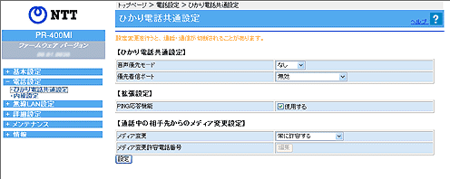
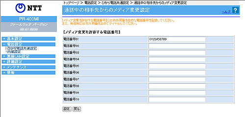

| 電話設定−ひかり電話共通設定 |
ひかり電話をご利用いただくためには、ひかり電話サービスのご契約が必要です。
ひかり電話サービスをご契約でない場合は、ひかり電話の設定に関するメニューや画面が表示されません。 |
| 本商品の電話機能に関する設定を行います。 |
| 設定値を選択したあとに［設定］をクリックすると設定内容が反映され、設定内容が保存されます。 |
| |
| ※「Web設定」画面に表示されているボタンについての説明は こちら |
|  |
|
|
| ［ひかり電話共通設定］ |
 音声優先モード
(初期値：なし) 音声優先モード
(初期値：なし)
| |
インターネットとひかり電話を同時に使用する場合に、音声品質を改善するため、音声パケットを優先的に送出する設定をします。
|
|
- 「なし」
音声優先制御を行いません。
- 「優先」
音声パケットを優先処理します。
- 「最優先」
音声パケットを最優先で処理します。
|
＜お知らせ＞
- マンションタイプ（VDSL方式）でご利用いただく場合のみ音声品質が改善する場合があります。
また、 音声パケットの優先処理に伴い、データ通信速度が低下する場合があります。
|
| |
|
| 優先着信ポート
(初期値：無効） |
|
本商品の2つの電話機ポートに同一の着信番号を設定し、どちらか一方の電話機ポートに優先して着信させる機能です。優先して着信する電話機ポートを選択します。
|
- 「アナログ端末（電話機1）」
電話機1ポートに接続したアナログ端末に優先的に着信します。
- 「アナログ端末（電話機2）」
電話機2ポートに接続したアナログ端末に優先的に着信します。
- 「無効」
優先着信ポートが無効に設定されています。
|
＜お知らせ＞
- 優先着信ポートを有効に設定する場合は、「電話設定」-「内線設定」で次の設定が必要です。
| ・ |
［内線番号一覧］で［アナログ端末（電話機1）］と、［アナログ端末（電話機2）］の「利用有無」にチェックしてください。 |
| ・ |
［内線番号一覧］で［通常端末］、または［音声専用端末］の「利用有無」のチェックをすべて外してください。優先着信ポートをご利用になる場合、IP端末はご利用になれません。 |
| ・ |
「内線設定（アナログ端末）」の「アナログ端末（電話機1）」と「アナログ端末（電話機2）」で同一の着信番号を1つ以上選択し、「割込音通知」の「使用する」のチェックをはずしてください。
|
- 優先着信ポートを有効に設定する場合は、電話機1、2ポートで同一の着信番号を 1つ以上設定している必要があります。電話機1、2ポートで同一の着信番号を設定しない場合、優先着信ポートの設定は無効になります。
- 電話機1、2ポートで同一の着信番号が1つの場合、優先着信ポートと指定着信機能を合わせてご利用になるには、先に指定着信機能の設定を行ってください。指定着信機能の設定では、「指定なし着信」にチェックしてください。
|
| |
|
|
| ［拡張設定］ |
| PING応答機能
(初期値：使用する) |
| |
ひかり電話網からのPINGに応答する機能を使用する場合にチェックします。
|
|
|
| ［通話中の相手先からのメディア変更設定］ |
| ※ご利用のサービスにより設定項目が表示されない場合があります。 |
メディア変更（初期値：常に許容する)
| |
ひかり電話で通話中に相手先からのメディア変更を許可するかしないかを選択します。
「発信時のみ許容しない」または「常に許容しない」を選択し［設定］をクリックすると、「メディア変更許容電話番号」の［編集］が有効になります。
|
|
- 「常に許容する」
通話中の相手からのメディア変更を常に許容します。
- 「発信時のみ許容しない」
本商品から発信した通話の場合は、通話中の相手からのメディア変更を許容しません。
- 「常に許容しない」
通話中の相手からのメディア変更を常に許容しません。
|
＜お知らせ＞
- 通話中の相手からのメディア変更を許容する場合、別途通話料がかかることがあります。
|
| |
|
|
| ［通話中の相手先からのメディア変更設定］ |
| 通話中の相手からのメディア変更を許容しない設定（「発信時のみ許容しない」、「常に許容しない」）としている場合でも、事前に本設定に登録した接続先との通話中にはメディア変更を許容させることができます。 |
|
|  |
メディア変更を許容する電話番号
| |
メディア変更を許容したい接続先の電話番号を設定します。最大10件までの設定が可能です。
|
|
＜お知らせ＞
- 重複した電話番号は入力できません。
- 電話番号はハイフン（“−”）なしで入力してください。
- 発信者通知番号(186)、発信者非通知番号（184）から始まる番号は設定できません。
- あらかじめ登録した電話番号に対するメディア変更を許可するためには、ナンバー・ディスプレイの契約が必要です。
|
|
|
| ↑ページのトップへ |